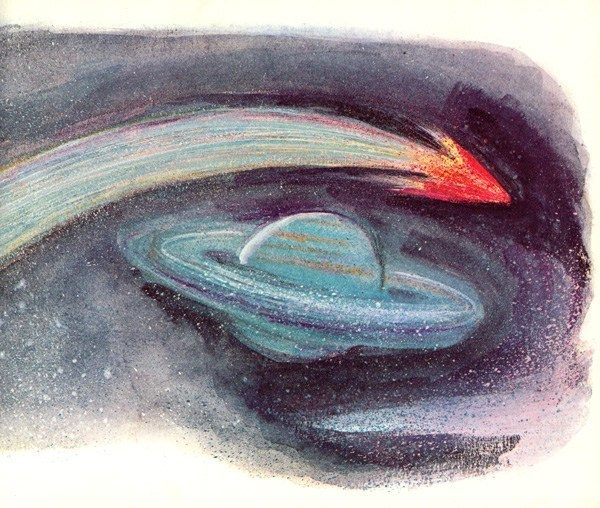
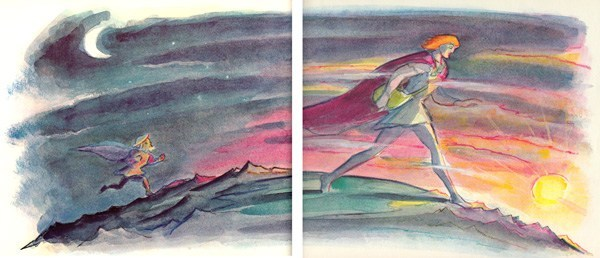

Voltaire's Book
Frenc Enlightenment Writer
Micromégas 1752

Di sebuah planet yang beredar mengelilingi bintang Sirius, hiduplah seorang anak muda amat cerdas. Aku mendapat kehormatan berkenalan dengannya pada saat dia mengunjungi sarang semut kami baru-baru ini. Dia dipanggil Micromégas, nama yang pantas untuk bangsa besar. Tingginya 8 league, atau 24.000 langkah geometris dengan panjang masing-masing lima kaki, atau 120.000 kaki.
Kita orang bumi punya tinggi rata-rata hampir tidak lebih dari lima kaki—satu langkah. Jadi buminya Tn. Micromégas pastilah memiliki keliling 24.000 kali lebih besar daripada Bumi kecil kita. Di alam tidak ada yang lebih sederhana, lebih wajar. Domini raja-raja tertentu di Jerman atau Italia, yang dapat Anda kitari dalam setengah jam, dibandingkan dengan kekaisaran Turki, Rusia, atau China, hanya memberi gambaran samar akan lebarnya kesenjangan yang Alam tetapkan di antara beraneka jenis makhluk sejagat raya.
Berdasarkan tinggi Yang Mulia Micromégas, pemahat atau pelukis manapun akan sependapat bahwa pinggangnya pasti sepadan, berkeliling sekitar 50.000 kaki. Dengan hidung sepertiga panjang wajah eloknya, dan wajah sepertujuh tinggi tubuh eloknya, maka hidung Sirius berpanjang kira-kira 5.714 kaki.
Akalnya menandingi orang paling terdidik di antara kita; dia tahu banyak hal, sebagiannya adalah hasil temuan sendiri. Dia belum menginjak usia ke-250, dan sedang belajar di sekolah paling ternama di planetnya, sebagaimana lazim pada usianya, ketika memecahkan 50 dalil Euclid—18 lebih banyak daripada Blaise Pascal, yang, menurut keterangan saudarinya, usai memecahkan 32 dalil demi kesenangan pribadi, menjadi ahli geometri cukup bagus dan metafisikawan amat buruk. Saat berumur sekitar 450 tahun, dan sudah melewati masa kanak-kanak, Micromégas membedah banyak serangga kecil berdiameter kurang dari 100 kaki, dengan bantuan mikroskop canggih; dia menulis sebuah buku menarik tentang mereka, yang membawanya ke dalam masalah.
Mufti negeri tersebut, yang cenderung rewel dan sangat jahil, menjumpai pernyataan yang dianggap mencurigakan, menghina, gegabah, dan bid’ah di dalam karyanya, lalu mereka gugat dia dengan rasa permusuhan sengit. Soal yang dipersengketakan adalah apakah bentuk substansial yang menyusun kutu-kutu Sirius sama sifatnya dengan penyusun siput. Micromégas membela diri dengan menggebu-gebu, semua wanita memihaknya; persidangan berlangsung 220 tahun. Akhirnya sang mufti meminta buku tersebut dikecam oleh para hakim yang belum pernah membacanya, dan penulisnya dibuang dari istana selama 800 tahun.
Dia tidak begitu merana dibuang dari istana yang penuh tipu muslihat dan kepicikan. Dia menggubah sebuah lagu jenaka yang mengejek si mufti, tapi itu tidak membuatnya jengkel. Kemudian dia berangkat untuk melakukan perjalanan dari planet ke planet, dengan niat memperbaiki akal dan jiwanya, seperti kata pepatah.
Mereka yang bepergian di atas kereta kuda pasti heran dengan jenis kendaraan yang dipakai di sana. Kita, di atas gundukan lumpur kecil, tak bisa membayangkan apa-apa di luar pengalaman kita sendiri. Pelancong kita ini mengalami perkenalan begitu menakjubkan dengan hukum gravitasi, semua gaya tarik dan tolak, dan memanfaatkan pengetahuannya sedemikian rupa hingga berpindah dari satu planet ke planet lain, kadang dengan sarana sinar matahari, kadang dengan bantuan komet, laksana burung yang melompat dari dahan ke dahan. Dia lintasi Bima Sakti dalam waktu singkat, dan wajib kuakui dia tak pernah melihat langit tertinggi nan indah yang menurut sesumbar pendeta masyhur Derham telah ditemukan di ujung teleskopnya, kecuali bintang-bintang yang memadatinya. Bukan berarti aku menyatakan Tn. Derham salah lihat, amit-amit! Tapi Micromégas ada di tempat itu, dia pengamat teliti, dan aku tak berkeinginan menyangkal siapapun.
Micromégas, sesudah banyak berbelok dan menikung, tiba di planet Saturnus. Betapapun terbiasa melihat hal-hal baru, saat menyaksikan ukuran kecil planet ini dan para penghuninya, semula dia tak sanggup menahan senyum superioritas yang adakalanya lolos dari orang paling bijak sekalipun; karena Saturnus memang tidak sampai 900 kali lebih besar dari Bumi, dan penduduk negeri tersebut orang-orang kerdil belaka, tingginya cuma sekitar seribu depa. Awalnya dia sedikit menertawakan bangsa ini, sebagaimana musisi Italia mengejek penampilan Lulli saat bertandang ke Prancis. Tapi, sebagai orang berpikiran sehat, si Sirius segera yakin bahwa makhluk berakal tidak boleh bersikap konyol, sebab dirinya hanya setinggi 6.000 kaki. Dia segera akrab dengan bangsa Saturnus setelah keheranan mereka reda. Dia membina persahabatan dengan sekretaris Akademi Saturnus, pria amat cerdas yang belum menemukan apa-apa tapi unggul dalam mendeskripsikan temuan orang lain, dan pandai menggubah sajak kecil lumayan apik atau melakukan perhitungan rumit.